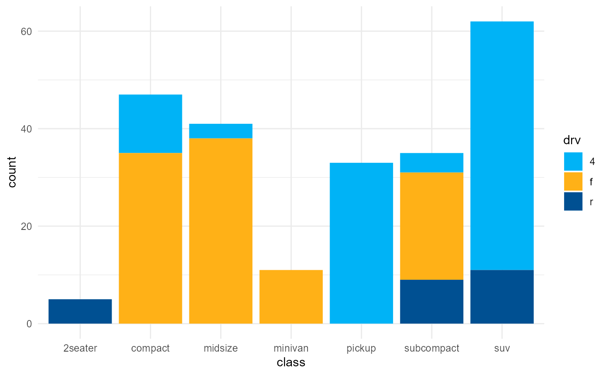
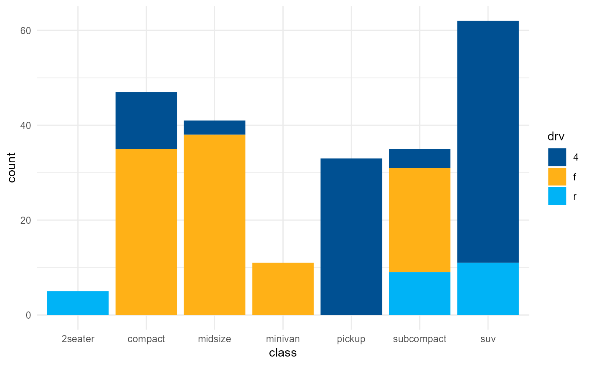

scale_rcc.RdColour scale for categorical variables based on RCC graphic profile.
scale_colour_rcc( ..., aesthetics = "colour", direction = 1, na.value = "grey50" ) scale_fill_rcc(..., aesthetics = "fill", direction = 1, na.value = "grey50")
| ... | Other arguments passed on to |
|---|---|
| aesthetics | Character string or vector of character strings listing the
name(s) of the aesthetic(s) that this scale works with. This can be useful, for
example, to apply colour settings to the |
| direction | Sets the order of colours in the scale. If 1, the default, colours are as the in RCC graphic profile. If -1, the order of colours is reversed. |
| na.value | Colour to use for missing values |
library(ggplot2) library(rccthemes) theme_set(theme_minimal()) # Example of using the RCC scale for the esthetic colour ggplot(mpg, aes(x = displ, y = hwy, colour = class)) + geom_point() + scale_colour_rcc()# Example of using the RCC scale for the esthetic fill g <- ggplot(mpg, aes(x = class, fill = drv)) + geom_bar() g + scale_fill_rcc()g + scale_fill_rcc(direction = -1)